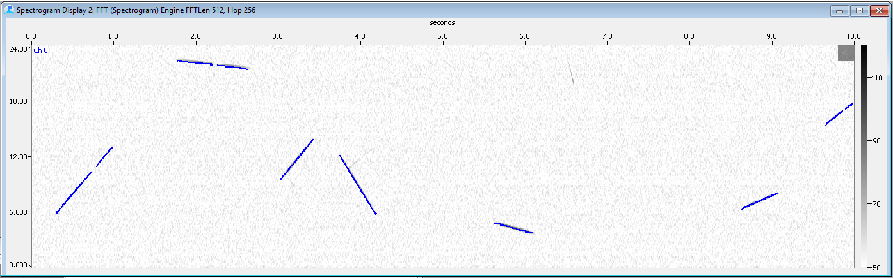
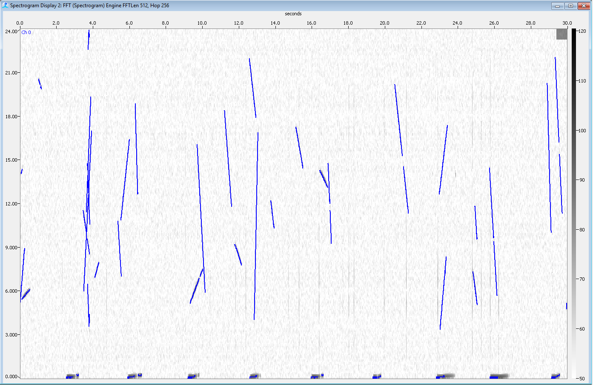
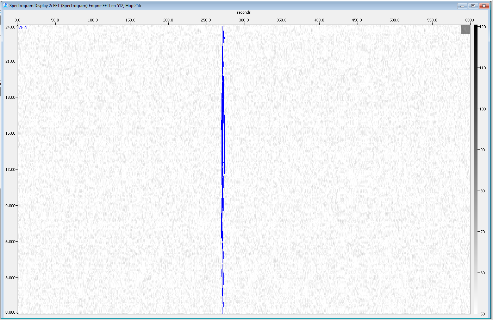

Overview
The Signal Injection and Detection Evaluator (SIDE) Module offers the ability to predict detection efficacy and document real-time automated detector and human operator effectiveness as a function of distance (range) between a detector and the sound source. Incorporating the SIDE module into PAMGuard will improve the scientific validity of any monitoring and mitigation regimes that use PAM as part of their suite of survey methods. It will serve as a toolkit for performance monitoring on both commercial and non-commercial projects.
It is hoped that the integration of the SIDE module into PAMGuard will increase the pace of acceptance of PAM methodologies by regulatory authorities, by allowing an objective evaluation metric for critical assessment of in situ detection performance within specified monitoring distances and proposed PAM programs. In addition, the ability to automatically generate summary evaluation statistics in a standardized format will support and encourage the development and adoption of PAM standards throughout the industry. Importantly, use of SIDE will allow the efficacy and quality of different PAM operations to be objectively evaluated by non-specialists, and to allow operators to test the system themselves.
Clusters, Signals, and Sequences
Species Clusters
There are over 70 species of marine mammals, and it is impossible to define a set of test signals for every one of those species. However, groups of related species often share similar signal properties. This has led to the definition of a set of species clusters for the SIDE module. A species cluster is defined as a group of marine mammal species that share similar acoustic signal characteristics. Each species cluster is associated with a specific default call type that is expected to occur over a particular frequency bandwidth, over a range of source levels (i.e. loudness), and with a particular structure (pulsive, tonal, frequency sweep, etc.) and repetition rate. There are 9 different species clusters in the SIDE modules that the operator can test with:
| Species Cluster Name | Signal Type and Bounds | Duration | Source Level (pk-pk) [dB re 1 μPa @ 1m] | Number of signals in a sequence | Depth distribution of injected signals [m] |
|---|---|---|---|---|---|
| Low-frequency baleen whales | Random linear sweep between 15-100 Hz. Sweep is restricted to 1 octave (e.g. can sweep from 15-30 Hz, or from 50-100 Hz, but not from 15-100 Hz). | 2 s (± 0.5) | 192 (± 6) | One sound generated per sequence | |
| High-frequency baleen whales | Random linear sweep between 50 and 1000 Hz. Restricted to 1.5 octaves. | 2 s (± 0.5) | 163 (± 10) | One sound generated per sequence | |
| Right whale | Based on right whale upcall. Shape is a quadratic sweep with three points drawn from frequency distributions of 90 ± 15, 110 ± 20, and 170 ± 30. | 0.75 s (± 0.25) | 180 (± 2.5) | One sound generated per sequence | |
| Sperm whale | 5-6 cycles of sound generated between 5 and 6k Hz. (1 ms duration). Hann windowed. | 0.001 s with slowly varying ICI (mean ICI = 0.5 s) | 189 (±2) slowly varying | 20 clicks per sequence. | |
| Beaked whales | Linear up-sweep from between two distributions start is 20+/-5k Hz, end is 45+/-5k Hz. | 0.3 s ± 0.003 slowly varying (mean ICI = 0.4 s) | 182 (± 9) | 10 clicks per sequence | |
| Dolphin whistles | Linear chirps between 2 and 24k Hz. Restricted to 1.5 octaves. No harmonics. | 0.5 s (± 0.2) | 149 (± 13) | 10 whistles generated per 10 s long cluster, with independent random starts | |
| Dolphin clicks1 | Single cycle pulse at 60k Hz (gives a click with a bandwidth of about 30-120k Hz). | 166ms (mean ICI = 0.1s, slowly varying) | 172 ± 10 | 10 clicks per sequence | |
| Blackfish tone | Random sweep between 4-8 k Hz, restricted to 0.6 octaves. 7 square wave harmonics. | 0.4 s (± 0.1) | 125 ± 4 | 2 sounds per sequence (2 s gap, but randomised) | |
| Harbor porpoise1 | Frequency at 130+/- 5k Hz. Raised sin window. | 77 (± 7) microseconds (mean ICI = 0.4 s, slowly varying) | 168 ± 13 | 10 clicks per sequence |
Signals
A signal is defined as a discrete vocalization that has a specific duration, frequency range, amplitude and depth as described in the table above. Using these parameters, individual signals are generated and displayed in PAMGuard spectrograms.
A synthetic signal detection should not result in an unnecessary mitigation event during application of the SIDE module in a commercial survey. Therefore, the signal generation algorithm uses only key characteristics of the signal necessary to trigger automated detections. The simplified signals are suitable for use with the PAMGuard detectors, which are generally looking for quite a broad range of sound types. Operators should be able to recognize signals from background noise, but not mistake them for actual marine mammal vocalizations. They are not suitable for use with species-specific classifiers (e.g. the Rocca module, or Whistle classifier), which will reject them as unknown or make a random classification.
Synthetic dolphin whistles are shown in the image below. 
Sequences
With the exception of some baleen whales, few cetaceans will make just one call over the course of a minute. In practice, PAM systems often make detection decisions based on an entire call sequence, rather than by individual signals. A sequence is therefore defined as a series of signals that are associated with one another in the call repertoire of the species cluster.
The SIDE module generates sequences in a manner relevant to how both automatic detectors and humans make detection decisions. The module randomly varies the number of individual calls in a sequence, however the mean number of signals per sequence for each species cluster remains consistent. As with the individual synthetic sounds, the intent was not to generate a series of sounds that represent the actual vocal output of an animal but to generate enough signal for a detector or alert an operator to determine that an animal is present.
Tests
A Test is defined as a collection of rapidly injected sequences for each cluster to answer the question Can my system detect calls from a number of species clusters at specified distances, under the current noise conditions? In order to achieve this, a number of sequences of sounds are generated and injected into the current audio stream. The testing algorithm performs the following series of steps:
- Randomly generates a time to produce a sequence of signals
- Generates a range, depth, and bearing of a source. The detection range of interest (generally the radius of the mitigation zone) and randomization factor can be set by the operator in the Species Cluster settings panel
- Selects the number of sequences to generate based on parameters provided by the species cluster (see table above).
- Synthesizes individual signals representative of the bandwidth and temporal structure specified for that particular species cluster (see table above).
- Scales the signals according to the expected received level implied by the source slant range, source level distribution, and propagation law.
- Inserts the appropriately scaled and time-delayed synthesized sequences into multi-channel real-time (or archived data being streamed in real-time) data streams. Accurate time delays are essential since they allow PAMGuard modules to accurately localize the signals. This is important since operators, and some detectors, often use the regularity of multiple calls being detected on a consistent bearing to confirm a detection.
Two types of test are available, a Quick Test (QT) and a Random Test (Drill). Both operate in almost exactly the same say and generate similar output, but serve slightly different purposes.
Quick Test
The goal of a Quick Test is to determine the detection functionality of the PAM system in the current environmental conditions. The test is not intended to evaluate operator performance, but primarily to evaluate the efficacy of the automated detectors.
Sequences are run one after the other with little or no delay, in order to generate sufficient data for evaluation in the shortest possible amount of time. In the image below, the generated signals of a Quick Test are shown as blue highlighted contours.

Detection matching takes place in real time, with the SIDE module monitoring data coming from each detector and matching the simulated sounds with the detections. Since a precise time of detection is available for automatic detections, a match between an injected signal and detection is counted if there is overlap in time and frequency of the simulated sounds (allowing for appropriate propagation time delays) and the detection.
Quick Tests can be particularly useful at the start of a PAM operation to determine how well the system is operating under the current noise conditions. This could lead to reconfiguration of the detectors or changes to the hydrophone deployment in order to improve detection efficiency (confirmed by further quick tests) before operations start in earnest. Quick Tests can be repeated whenever conditions change and detector efficacy is in question.
Random Drill
Random Drills are intended to test both operator alertness and automated detector efficiency over much longer periods of time and different noise conditions. Sequences are injected into the audio stream like the Quick Test, but at an infrequent rate (every few hours) over a period of days or even weeks.

Over an extended period of time Random Drills will generate the same statistics as the quick tests, but are more likely to capture the full range of operational (noise) conditions and operator attentiveness.